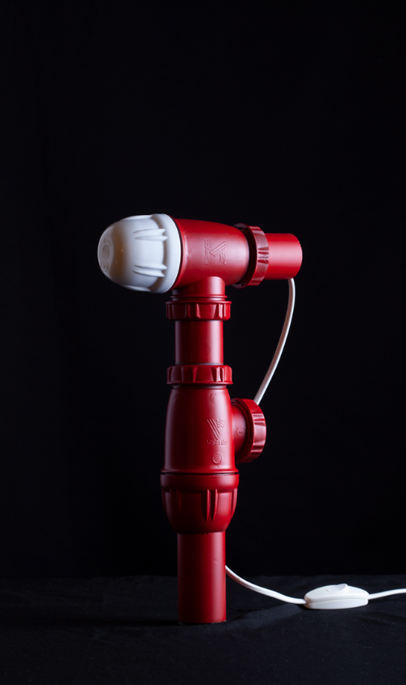
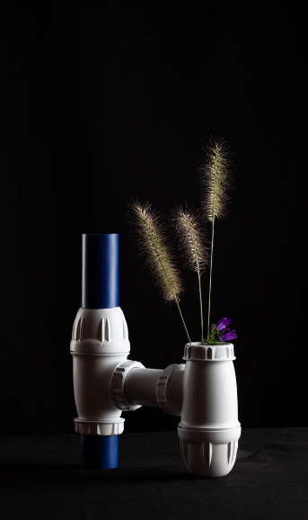
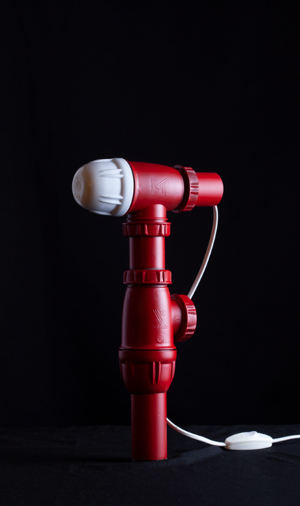
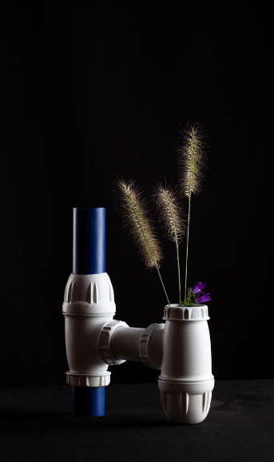

Siphons
Siphons are essential parts in plumbing. They are used to evacuate wastewater and prevent the rise of bad odors by retaining a small volume of water.
Made of PVC, they can be recycled by mechanical or chemical processes, these are poorly developed and expensive.
Finally, the last process is energy recovery by incineration.
By upgrading the siphons while keeping their shape, this avoids costly and polluting conversions.
 



Contact
ah!
fr